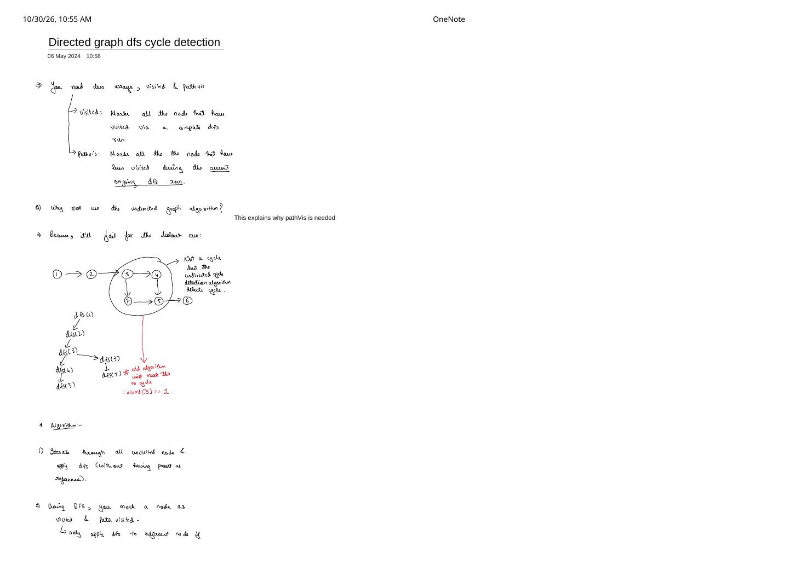
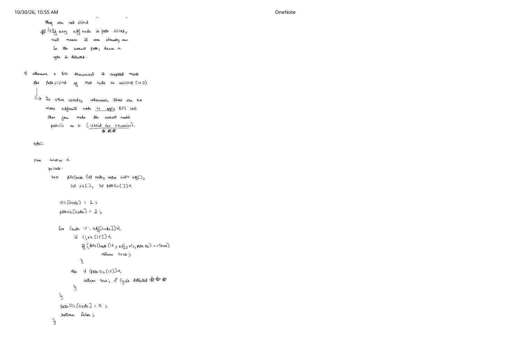

Part 2: Directed Graph Cycle Detection via DFS (pathVis) & Kahn's BFS
Expanded from handwritten competitive coding study notes (03_Directed_graph_dfs_cycle_detection.pdf & 04_Directed_graph_bfs_cycle_detection.pdf) · View original handwritten pages
1. Method 1: Directed Cycle Detection via DFS (vis + pathVis)
In a directed graph, simply discovering a previously visited vertex $v$ does not imply a cycle! Look back at the 7-node counterexample drawn on page 1 of 03_Directed_graph_dfs_cycle_detection.pdf (1 → 2 → 3, splitting into 3 → 4 → 5 → 6 and 3 → 7 → 5):
- Branch 1 runs
dfs(1) → dfs(2) → dfs(3) → dfs(4) → dfs(5) → dfs(6), marksvis[5] = 1, and unwinds back to3. - Branch 2 runs
dfs(3) → dfs(7)and inspects edge7 → 5. The old undirected check seesvis[5] == 1and5 != parent(7), falsely declaring a cycle—even though there is no directed way to get from5back to3or7!
Two-Array Invariant: vis[] vs. pathVis[]
vis[node](Global Visited): Marks every vertex whose reachable subgraph has already been explored (prevents re-exploring finished DAG branches like5 → 6in exponential time!).pathVis[node](Active Recursion Stack): Marks vertices that lie on the current ongoing DFS call path from the start of the active dive down tonode.
A directed cycle exists if and only if DFS encounters an edge $u \to v$ where pathVis[v] == 1 (a true back-edge to an ancestor still active on the recursion stack!).
Tracing vis[] & pathVis[] on the Handwritten Diamond Counterexample
| Event | vis[1..7] |
pathVis[1..7] |
Outcome |
|---|---|---|---|
Dive 1 → 2 → 3 → 4 → 5 → 6 |
[1,1,1,1,1,1,0] |
[1,1,1,1,1,1,0] |
6 has no outgoing edges |
Backtrack out of 6, 5, 4 to 3 |
[1,1,1,1,1,1,0] |
[1,1,1,0,0,0,0] |
pathVis[4..6] reset to 0! |
Dive 3 → 7, inspect edge 7 → 5 |
[1,1,1,1,1,1,1] |
[1,1,1,0,0,0,1] |
vis[5]==1 (don't recurse), pathVis[5]==0 → No cycle! |
Now imagine adding a single upward arrow 5 → 3: during the initial dive 1 → 2 → 3 → 4 → 5, pathVis[3] is still 1 when 5 inspects 3, so else if (pathVis[3]) return true; catches cycle 3 → 4 → 5 → 3 immediately!
// Method 1A: Striver's Directed Cycle Detection via vis[] + pathVis[] — C++
class Solution {
bool dfsCheck(int node, const vector<vector<int>>& adj,
vector<int>& vis, vector<int>& pathVis) {
vis[node] = 1;
pathVis[node] = 1; // Enter active recursion path
for (int nbr : adj[node]) {
if (!vis[nbr]) {
if (dfsCheck(nbr, adj, vis, pathVis)) return true;
} else if (pathVis[nbr]) {
// `nbr` is already visited AND still on the active path -> cycle!
return true;
}
}
// Backtrack: remove `node` from the active path before returning!
pathVis[node] = 0;
return false;
}
public:
bool isCyclic(int V, const vector<vector<int>>& adj) {
vector<int> vis(V, 0), pathVis(V, 0);
for (int i = 0; i < V; ++i) {
if (!vis[i]) {
if (dfsCheck(i, adj, vis, pathVis)) return true;
}
}
return false;
}
};Contest Optimization: Single 3-Color State Array
Notice that (vis=0, pathVis=1) is impossible! The three valid combinations—(0, 0) unvisited, (1, 1) on active path, and (1, 0) completely finished—map cleanly onto a single array state[V] taking values 0 (white), 1 (gray / active), and 2 (black / finished), halving array memory.
2. Method 2: Directed Cycle Detection via BFS (Kahn's Algorithm)
How can Breadth-First Search—which has no recursion call stack—detect directed cycles? As derived in 04_Directed_graph_bfs_cycle_detection.pdf, we apply Kahn's Topological Sort Algorithm via contrapositive:
- Topological sort succeeds in visiting all $V$ vertices if and only if the directed graph is a DAG (acyclic).
- Therefore, if Kahn's BFS terminates early with
visitedCount < V, the graph must contain a directed cycle!
Handwritten Starvation Trace on the 5-Node Cyclic Graph
Look at the 5-node directed graph on page 1 of 04_Directed_graph_bfs_cycle_detection.pdf with edges 1 → 2, 2 → 3, 3 → 4, 4 → 2 (cycle!), and 3 → 5:
2 → 3 → 4 → 2 adds $+1$ internal incoming edge to every cycle vertex (2, 3, 4), keeping their indegrees $\ge 1$ forever so neither they nor downstream vertex 5 ever enter $Q$.// Method 2: Directed Cycle Detection via Kahn's BFS — C++
class Solution {
public:
bool isCyclic(int V, const vector<vector<int>>& adj) {
vector<int> indegree(V, 0);
for (int u = 0; u < V; ++u) {
for (int v : adj[u]) {
indegree[v]++;
}
}
queue<int> q;
for (int i = 0; i < V; ++i) {
if (indegree[i] == 0) q.push(i);
}
int cnt = 0; // We only need a counter, not the full topo vector!
while (!q.empty()) {
int u = q.front();
q.pop();
cnt++;
for (int v : adj[u]) {
if (--indegree[v] == 0) {
q.push(v);
}
}
}
// Exact DAG iff cnt == V; stopped early (cnt < V) iff cycle exists!
return cnt != V;
}
};# Directed Cycle Detection via Kahn's BFS — Python
from collections import deque
def is_cyclic_directed_bfs(V: int, adj: List[List[int]]) -> bool:
indegree = [0] * V
for u in range(V):
for v in adj[u]:
indegree[v] += 1
q = deque(i for i in range(V) if indegree[i] == 0)
cnt = 0
while q:
u = q.popleft()
cnt += 1
for v in adj[u]:
indegree[v] -= 1
if indegree[v] == 0:
q.append(v)
return cnt != V- Time Complexity (both DFS & Kahn's BFS): $\mathcal{O}(V + E)$.
- Space Complexity: $\mathcal{O}(V)$ (
vis + pathVis + call stackfor DFS;indegree + queuefor Kahn's BFS, with zero recursion-limit risk in Python!).
From the Handwritten Notes
Expand the original handwritten pages below to inspect the exact derivations, dry runs, and annotations:
View original note — Directed Graph DFS Cycle Detection: Why pathVis Is Needed & Diamond Counterexample (Page 1)


visited vs. pathVis, 7-node diamond DAG showing why undirected cycle detection falsely triggers at node 5, and algorithm steps 1–2.View original note — Directed Graph DFS Cycle Detection: Backtrack Reset & C++ dfsCheck Code (Page 2)


pathVis[node] = 0 when unwinding recursion, plus full Striver C++ dfsCheck implementation.